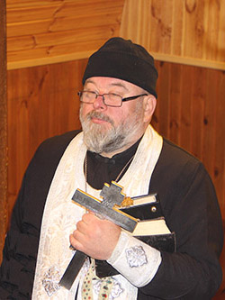

ЧАЕПИТИЯ ЗА КРУГЛЫМ СТОЛОМ
Для тех, кто желает обсудить волнующие вопросы с православным священником, встретиться с братьями и сестрами по вере, пообщаться с близкими людьми, при нашем храме проводятся чаепития за круглым столом.
- План православных духовных бесед

{kind=link}
Современный человек порой считает, что в век технического прогресса нет проблем с получением интересующей тебя информации: в интернете можно найти огромное количество проповедей и бесед ведущих богословов на различные темы. Но только в процессе воцерковления человек начинает понимать, что информация, поданная на широкую аудиторию и беседа с духовником – разные вещи. Никакая лекция не заменит живого общения; никакое теоретизирование не сравнится с непосредственной передачей жизненного опыта.
Рано или поздно начинаешь понимать, что сколько бы ты книг ни прочитал, сколько бы школ и курсов не закончил, а в конкретной ситуации не знаешь, как поступить, как защитить свою веру.
И противник наш диавол, пользуясь этим невежеством, сеет неверие, нерадение, отчаяние и уныние. Нужен мудрый совет, поддержка братьев и сестер по вере. Для этого мы собираемся за круглым столом и учимся верить, надеяться и любить друг друга.
Мы говорим о настоящем, глубинном Православии, о том, как не быть формально верующим, о том, что Господь ждет от нас всего нашего сердца; получаем ответы на самые сложные вопросы, которые открывают духовные истины и помогают разобраться в жизни, и в себе самих.
Конечно, нельзя утверждать, что на этих встречах разрешатся все проблемы и найдутся ответы на все вопросы, но, несомненно, братское общение принесет пользу каждому.
Мы всегда рады новым собеседникам. Ждем Вас каждую субботу в 19:00.
Спаси Господи!